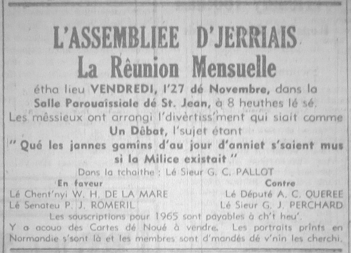

RÊUNION MENSUELLE
RÊUNION MENSUELLE
Les jannes gamins d'au jour d'anniet s'saient bein mus si la Milice existait, 'tait l'opinion d'la majorité des membres au dêbat, dans la Salle Parouaîssiale dé St. Jean, vendrédi, l'27 dé novembre.
I'y avait au mains 120 membres présents, et l's affaithes pour la séthée c'menchîtent avec la lectuthe du rapport du mais d'octobre, qui fut accepté. La correspondance fut liue auprès, et trais nouvieaux membres fudrent êlus.

Lé président du dêbat, l'Sieur G. J. Pallot, auve dé bein amusantes ermerques, întroduit les mêssieux qui s'n allaient prendre part. Pour la motion, lé proposant 'tait l'Chent'nyi W. H. de la Mare, et à lé s'gonder l'Sénateu P. J. Romeril, deux méssieux qu'avaient servi dans la Milice. Pour l'opposition, l'Député A. C. Quérée, un aut' moussieu des jours dé la Milice, et à l'supporter, l'Sieur Garnet Perchard, un miot trop janne pour aver servi.
Toute eune difféthence
Lé Sieur de la Mare dit qué dans san temps, ch'tait la réglye qué touos les jannes hommes dé 16 ans fussent enr'gistrés pour la Milice, à l'arsenal lé pus près d'siez ieux, et si 'taient passés par les docteurs, 'taient enrôllés comme soudards, et lus criyaient bientôt d's hommes! En faithant lus drill les jannes hommes 'taient montrés comment lus porter drait, comment lus comporter et lus habillyi. Il' avaient bein des choses dé donnés à faithe, même emplyi lus pailliasses avec dé l'êtrain, et en touos cas fallait obeï les ordres qui lus 'taient donnés. Toute eune difféthence auve les jannes d'à ch't heu', qui lus attroupellent en d'hors des cafés, auve des êtraites braies, des pouaintus souliers qui n'vallent pas mus qué d'faithe servi à bouchi des creux d'souothie, et des longs ch'veux comme des crinnes dé ch'va!
La Milice avait 'té abandonnée parce' qu'ou' couôtait trop à garder, mais i'y a bein des sou d'dêpensés dé nos jours qu'i s'saient bein mus fais servi à apprendre ès jannes à vivre, et si ch'tait la l'cas, i' éthait mains d'jannes gens d'vant la Cour.
Antique
L'opposant, l'Député Quérée, dithait au contraithe, preunmiéth'ment qué ché s'sait prendre un pas en arriéthe d'aver la Milice quand nou ouïyait pasler dé cosmonauts et d'aller à la lune! Les jannes à ch't heu' 'taient trop avanchis et dêhallés pour jouer ès soudards! Il' avaient d'l'éducation, et n'voulaient pas être rammasés comme lé temps passé. San deuxième point 'tait qué la Milice s'sait eune mauvaise économie. En 1906, ou couotait des milles louis. Combein qu'ou' couot'tait à ch't heu'? I' fallait d's hopitieaux, des maiethons, d's ecoles; les jannes à 16 ans 'taient à l'êcole à lus prépather pour remplyi dé bouannes posts. La vie pour ieux 'tait un callenge pas pour jouer ès soudards! Comme traîsième point, lé Député dit qué fallait penser a l'întéthêt personnel. Lé temps passé, les jannes 'taient veues, mais pas entendus pasler et les mousses jouaient avec des patates, mais d'nos jours i'y avait l'sport et l's arts! Quatrièment, la Milice né nos d'fendrait pas! I'y avait toutes sortes dé méthodes pour lé nouvel âge, mais I'Ile né pouvait pas afforder des bâtieaux d'dguèrre et l's avions nécessaithe! S'i' y avait eune crise, la Milice, avec sen étchipe antique, né vaudrait rein du tout!
Bein pus d'discipline
Lé Senateu Romeril, en s'gondant la motion, affermi hardi dé chein qué l'proposant avait dit. S'i' y avait la Milice i'y éthait bein pus d'discipline parmi les jannes, et i'n éthaient pas béthouain d'eune nouvelle prison! Lé déportément des jannes chang'geait tout-d-suite. Parmi la discipline dé la Milice i'y avait quand même du pliaisi ensemblye. Fallait qué tous mangisse lé mangi fourni et i'y n'y avait pas tant d'heinitcheurs comme anniet! Les jannes avaient d'ordgi d'ieux-mêmes!
Iou?
Lé Sieur Garnet Perchard, en s'gondant l'opposition, dit au proposeux et s'gondant d'la motion qué ch'tait la vie siez ieux qui I's avait mînt iou qu'i' taient, pas la Milice! I' paslaient d'aver la Milice, mais iou l'aver? Es Tchennevais i'y avait des neuves maiethons. Au Fort? I' veulent creuser d'sous! L's arsenals sont habités par des fanmilles! La seule pliaiche qu'i' pouvait penser 'tait sus les grèves à la mé basse! Mais, avec les touristes tch'est qui s'sait l'resultat?
Auprès nos aver raconter eune histouaithe amusant entouor la Milice à Flyitchet, i' dit qué pour eune chose les habits d'la Milice né 'taient pas d'tout comfortablye, et pis à ch't heu' les jannes tchittaient l'êcole à 16 ans, et dans bein des cas 'taient mathiés à 17! I' n'éthaient pas l'temps dé faithe dé Milice. Les jannes qui faithaient mâ n'avaient pas d'assez fortes punitions-ch'tait là l'malheur! Dans l'temps d'la Milice i' 'taient extchusés pour la saison d'patates, mais tchi qui s'arriv'thait à ch't heu', avec les patates, les tomates, les brécolis, les anémones, les g'zettes? I' n'éthaient janmais l'temps d'y aller du tout!
Le béthe
Eune bouanne tchestchion d'l'audience d'mandant si y avait du béthe fut bein rëponnue par lé Sieur de la Mare, disant qué l'sien qui veurt du béthe en trouve tréjous, n'importe iou qu'il est.
Lé Député Quérée èrpaslit étout et dit qu'i' fallait être constructif et pas destructif dé nos jours.
Auprés chenn'chîn lé vote fut prînt, et eune grande majorité 'taient en faveur dé la motion. N'faut pas oublier qué les débateurs n'accordaient pas nécessaith'ment avec chein qu'il'avaient dit duthant l'débat.
Ermerciements
Lé Sieur G. Pallot ermercyit touos les mêssieux qu'avaient prints part et paslé si bein, et ermercyit l'Connétablye Le Vesconte pour l'usage dé la salle acouo eune fais.
1964
Viyiz étout: